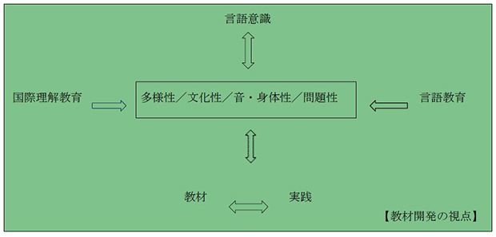

研究概要
本研究の趣旨
本「多言語・多文化教材研究」は、日本国際理解教育学会の特別課題研究「ことばと国際理解教育」（2007~2009年度）を基礎としつつ、その継続研究である科研費研究「多言語・多文化教材の開発による学校と地域の連携構築に向けた総合的研究（代表：山西優二、2011~2013年度）」として実施されたものである。 本研究は、国際理解教育等において重要な概念の一つとされつつある多言語・多文化主義さらには複言語主義の立場から、地域社会・学校の言語を取り巻く現状を踏まえつつ、それらの現状に即した多言語・多文化教材を開発すること、そして学校や地域における言語的文化的少数派児童（生徒）と多数派児童（生徒）、在住外国人と日本人とを結ぶ多言語・多文化教育実践を提案すること、をねらいにしている。
本研究の目的と経緯
「多言語・多文化教材研究」は、日本国際理解教育学会の特別課題研究「ことばと国際理解教育」(2007~2009年度)を基礎としつつ、その継続研究である科研費研究「多言語・多文化教材の開発による学校と地域の連携構築に向けた総合的研究（2011~2013年度）」として実施されたものである。以下、その両研究の経緯を簡単に紹介する。
1．日本国際理解教育学会の特別課題研究「ことばと国際理解教育」
特定課題研究では、2007年度を体制づくり、2008年度を研究の目的とことば観の問い直しなど基本的な研究の枠組みを決定するための期間とし、2009年4月にオープンフォーラム、2009年6月に第19回日本国際理解教育学会研究大会での特定課題研究報告、2009年10月および11月に公開研究会を実施した。 4月19日のオープンフォーラムでは、「ことばの豊饒性に触れる－音・身体・学び－」をテーマに、内田樹（神戸女学院大学）を講師に招き、言語そのものを問い直す視点について検討した。ことばを「創って使う」という人間の原始的な衝動の大事さ、同時代の人とのオーラルコミュニケーションだけでなく死者や先祖との対話に向けて読み書きが大事であること、表意文字としての漢字が示す図像と表音文字する日本語に見る言語操作の特殊性、日本語に見る男性語と女性語間での自由としての仮名が示す音声を、脳内の違う部位で並行処理な使い分けなど、従来のことば観を問い直す,多様な視点が示されたフォーラムとなった。 6月14日の研究大会では、それまで研究プロジェクトで協議してきた内容である「ことばにみる多様な役割」（山西優二）、「身体感覚に根ざしたことばの学びの可能性」（横田和子）、「ユネスコと諸外国の言語教育政策の動向」（丸山英樹）、「英語活動・複言語活動と言語意識」（吉村雅仁）、「地域日本語活動の動向と言語学習観」（服部圭子）について報告した。>その概要は「日本国際理解教育学会会報Vol.35」(日本国際理解教育学会、2009年）に報告されている。 10月17日の公開研究会では、「児童に身近な外国語への気付き―国際理解教育と言語意識教育」をテーマに、講師の福田浩子（茨城大学）による「言語意識教育とは何か―言語教育と国際理解教育の接点―」と題するイギリスの言語意識教育に関する講演を手がかりに、「ヨーロッパにおける少数言語教育政策」（丸山英樹）、「国際理解教育と外国語活動―英語活動の限界と多言語活動の可能性」（吉村雅仁）の報告も踏まえ、日本の学校教育現場で多言語化・多文化化が着実に進む中で、小学校児童の身近にある多様な外国語の問題を国際理解教育の視点から考えた。 11月21日の公開研究会では、「日本語教育の視点から国際理解教育を考える」をテーマに、講師の細川英雄（早稲田大学）による「国際理解教育とは何か―日本語教育の異端的立場から」と題する日本語教育や言語教育、さらには国際理解教育の目指すべき方向性についての講演をもとに、「他者を理解するためのことばの力とは－協働学習を通した日本語教育の目指すもの」（岡本能里子）、「国際理解教育の課題－地域日本語活動の現場から見えてくるもの」（服部圭子）の報告も踏まえ、大学や地域日本語教室での日本語教育・日本語活動の理念と実践、さらには国際理解教育との関連について考えた。 そして特定課題研究の全体のとりまとめとして、これまでの研究の中で浮かび上がってきた多様な視点を、可能な限り総合的に示す目的から、研究プロジェクトのメンバーの7人による以下の題目の6つの論文と「ことばと国際理解教育」に関連した文献リストを学会誌に掲載した(日本国際理解教育学会編『国際理解教育Vol.16』明石書店、2010年)。
- 国際理解教育からみたことばのもつ多様な役割」（山西優二）
- 「国際理解教育におけることばの学びの再考－ことばの身体性に根ざす学びの可能性－」（横田和子）
- 「国際的に認知される言語の多様性と欧州の言語教育政策の背景」（丸山英樹）
- 「国際理解教育としての外国語授業－意識と態度形成を中心に据えた『ことばの学習』－」（吉村雅仁）
- 「国際理解教育におけることばの力の育成－大学における協働学習を通した日本語教育からの提言－」（岡本能里子）
- 「地域日本語教育からみる国際理解教育の課題－生活のためのことばの視点から」（服部圭子）
- 「『ことばと国際理解教育』に関する文献リスト」（宮野祥子）
２．科研費研究「多言語・多文化教材の開発による学校と地域の連携構築に向けた総合的研究」
科研費研究では、2011年度には、多言語・多文化教育の政策・実践や多言語・多文化教材に関しての情報収集や実態調査を、ドイツ、イギリス、フランス、スペイン、インドネシア、フィリピン、東京都、神奈川県、岐阜県、大阪府、和歌山県等で実施した。そして2012年度・2013年度には、教材開発と教育実践を交錯させながら実施した。 2011年度の情報収集では、国際的な危機言語の動向、言語意識（Language Awareness）、「欧州言語共通参照枠（CEFR）」、「言語と文化への多元的アプローチのための参照枠（CARAP）」、日本にみる言霊信仰など、広く情報を収集した。たとえば、欧州諸国では少数派の言語保護の動きがあること、またその背景として、多言語主義から複言語主義への変化があることを確認した。>またアジア的日本的視点から「ことば」そのものの見方を拡げるため、ことばの意味以外の機能にも着目し、音の響きや身体の動きなど、身体とのかかわりが生み出すことばの感性的な働きも重視した。これは複言語主義の中でも文化的な側面を意識化したものとして捉えることができると考えたためである。 また2011年度には、ベルリン、ロンドン、バーミンガム、ヨーク、ストラスブール、アルザス、バスク、フィリピン、ジャグジャカルタ、可児市、秦野市、武蔵野市、奈良市、和歌山市、大阪府、苫小牧などの地域で、教材開発・実践に関する実態調査を実施した。 本研究プロジェクトが2012年度以降実施する教材開発・実践への示唆として、以下のような点が確認された。
1）教材開発プロセスへの当事者の参加
ベルリンにおいては、行政側と移民側が協議を重ねる方法をとり、教材プロセスの過程で当事者である移民（メンターとしての「地域の母」）が最初から参画することが、積極的参加や責任感の醸成に繋がっていた。外国人住民と日本人住民の協働参画で作り上げられた岐阜県可児市の舞台などの例も見られた。
2）企業・地域活動・教員研修が一体となった複言語教材開発
ロンドンには、企業活動・地域活動・教員研修などを一体的に担っている機関において、複言語教材が作成されていた。
3）地域社会の市民性教育を志向する言語的多様性と一言語内の文化的多様性に着目した教材作成
イギリスにおける代表的な３つの開発教育に関わる団体のリソース・センター訪問し、以下の教材を収集した。 * Investigating Languages:Level1/Level2 (Conventry City Council Education Service, 2005)： リスニング・スピーキング・リーディング・ライティングなどの４技能に加えて、アウェアネス（自分が知っている多言語を話す全ての人のリスト作成）の項目を取り上げた教材。 * Sue Palmer Eugenia Low, Words Borrowed from Other Languages: Key Stage 2 (Longman 1998)： 44の英語以外の言語に由来する単語がその背景にある文化とともに紹介されている教材。
4）問題解決型および少数派が親しむ物語を取り上げたデジタル教材利用
ストラスブールでは、言語的多数派と少数派が登場人物となり、共通の問題解決を行う多言語絵本を収集した。ヨーロピアン・スクールでの授業実践からは、言語的少数派のそれぞれの言語グループのほとんどが知っている童話を利用した多言語教材を、デジタル絵本として開発する示唆を得た。
5）多言語ポートフォリオ・言語地図の活用
フィリピン政府の外国語教育政策に対応し、国際交流基金マニラ日本文化センターが実施していた中・高等学校の日本語教員研修において、『en Tree』という教材を用いた言語ポートフォリオの活用が観察された。また、My Language Biography（フィリピノ語・英語以外の言語能力を暮らす内で共有し、共有・振り返り能力の育成）、およびMy Language Map（自分のことばの歴史を振り返り、ことばの大切さや世界のことばとの出会いに関して、視覚的な気づきを導く）を活用していた。
6）音や踊りを通した多言語・多文化感覚の学び等
ジャグジャカルタの「人間には創造性が一番大切」という理念を掲げる私立小学校、養護学校などにおいて行われた、現地と日本人のアーティスト達が協働するワークショップを見学した。ガムランやダンスといった、アートを通した実践から、多言語多文化的な感性を育むための示唆を得るとともに、ひとりでできることもあえてひとりではやらず、わかちあいながら行うというガムランの基本姿勢からも共生とは何かという示唆を得た。 以上の2011年度調査の詳細は、2012年度日本国際教育学会研究大会（2012年7月）で「多言語・多文化教材開発プロジェクト中間報告」（山西・吉村・藤原・丸山・岡本・服部・横田）として報告した。 そして2012年度以降は、それまでの研究の成果を踏まえた上での多言語・多文化教材の開発と実践づくりに向け、プロジェクトメンバーを、「学校教育」「日本語教育」「ことばと感性」「ことばをとりまく問題」の4チームに編成し研究を進行させた。その研究の途中経過については、2013年度日本国際理解教育学会研究大会（2013年6月）にて、「ことばの学習－多言語・多文化教材を活用した新井小学校での実践－」（山西・秦・黒川・宮野・岩坂・大山・丸山）、「男ことば・女ことばを『国際理解する』―日本語教育実践の現場から―」（佐藤・岡本・服部）、「共生のための言語教育実践に向けて―大学生を対象とした演習から―」（横田）として報告した。
多言語・多文化教材開発の視点
上記のような研究の経緯を踏まえ、研究プロジェクトでは、以下のような視点から教材開発にあたった。
1)ことばを｢道具｣としてとらえるだけでなく｢対象｣としてもとらえ、ことばのもつ｢多様性｣｢身体性｣｢文化性｣｢問題性｣といった特性に注視した教材開発を行う。
これまで言語教育では、ことばを「道具」、「コミュニケーションの道具」としてとらえることが多かったため、「話す」｢聞く」「書く」「読む」といった能力の形成に力点を置いてきた。 また言語教育による国際理解教育的実践という場合も、多くが「道具としての言語」を活用して、世界の文化や問題事象を学ぶといったものが多かった。 一方、国際理解教育の視点から「ことば」をとらえ直してみると、「道具」としてではなく、ことばそのものを「対象」「学習対象」としてとらえることが可能であることに気づかされる。たとえば以下に示すようなことばのもつ多様性、身体性、文化性、問題性といった特性は、ことばの世界の豊饒性と奥深さを示している。
- 多様性：ことば･言語の多様性
- 身体性：ことばに内在する音・身体性・霊性
- 文化性：ことばに内在する文化性
- 問題性：ことばを取り巻く個人的社会的問題
これら４つの特性は、国際理解教育の視点からことばへアプローチする際に想定される学習目標を基礎に想定したものであり、これらの特性は交錯し合いながら、そこに学習内容･学習方法が具体的に加味されることで、多様な実践が生み出されることになる。 またことばを扱う国際理解教育実践は、言語教育実践と双補完関係にあり、国際理解教育からのことばへのアプローチが、言語教育が担ってきた「話す」｢聞く」「書く」「読む」といった言語能力の質の向上に大きなインパクトを与えることも想定できる。
{kind=link}
2)ヨーロッパにみる言語意識教材を参照しながらも、非言語、危機言語などのテーマを加味し、言語意識に軸をおいた教材開発を行う。
3)小学校の総合的な学習の時間、地域の日本語教室、日本語学校、大学、教員研修、日本語教育指導者研修、などの場での実践を想定して教材開発を行う。